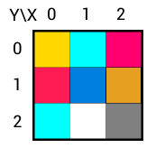
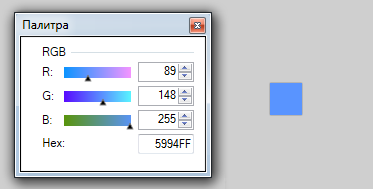
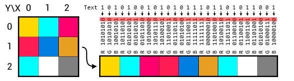
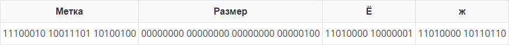

Цель:
Создать десктоп приложение с GUI позволяющее сохранять текстовую информацию в изображение формата png без видимого изменения исходного изображения. Приложение должно позволять сохранять текст в картинку и извлекать текст из картинки.
Изображение представляется в виде двумерной матрицы, элементом которой является пиксель.
Координаты каждого пикселя определяются парой чисел X и Y в указанном порядке. Начало отсчёта расположено в левом верхнем углу, X начинается с нуля и увеличивается слева на право, Y увеличивается сверху вниз. Размер изображения по X называется шириной (width) изображения, по Y - высотой (height) изображения.

Основная характеристика пикселя - это его цвет. В зависимости от типа изображения, глубины цвета и наличия альфа канала информация о цвете пикселя может хранится в разном виде, например:
В лабораторной работе будем считать, что информация о цвете пикселя определяется тремя отдельными каналами Red, Green, Blue. Каждый из каналов задаётся целым числом в диапазоне [0..255]. Каналы заданы в порядке: RGB.

Предполагается, что у вас уже установлен Qt framework 6 или PySide6. Если нет, то перед выполнением этого раздела установите. Вместо 6й версии можно использовать другую, вместо PySide можно использовать PyQt.
Откройте дизайнер графического интерфейса Qt Designer.
Если установлен Qt framework:
Через поиск приложений. Откройте меню Пуск и начните набирать Designer. Выберите любую из доступных версий.
Найти файл designer.exe вручную. Зайдите в корневую папку с установленным Qt → зайдите в папку с нужной версией фреймворка → затем в папку с инструментами сборки → перейдите в папку bin.
Путь может выглядеть, например так:
C:\Qt\6.0.1\mingw81_64\binC:\Qt\5.14.2\mingw73_64\bin
Если установлен PySide:
Перейдите в папку с интерпретатором Python → перейдите в папку Lib → перейдите в папку site-packages → перейдите в папку PySide6 → запустите designer.exe.
Путь может выглядеть, например так:
xxxxxxxxxxC:\Users\Professional\AppData\Local\Programs\Python\Python39\Lib\site-packages\PySide6
Тут же создайте папку bin и перенесите туда файл uic.exe. Если это не сделать, то функция преобразования UI в код будет не доступна из окна приложения Qt Designer, только из командной строки. Видимо это какой-то баг.
Как только Qt Designer запуститься, вы увидите диалоговое окно "Новая форма". Выберите "Main Window" и нажмите "Создать";
На панели виджетов найдите Push Button (для быстрого поиска вверху панели виджетов есть фильтр) и перетащите его на форму. Это обычная кнопка. Принцип работы: нажал → выполнилось какое-то действие. Всего создайте 4 кнопки;
Выберите первую кнопку и в окне "Редактор свойств" (по умолчанию находится с правой стороны) найдите свойство text (у этого окна тоже есть фильтр). Поменяйте текст на следующий: "Загрузить картинку";
У остальных кнопок поменяйте свойство text на: "Сохранить картинку", "Закодировать текст", "Декодировать текст";
Добавьте на форму виджет Plain Text Edit. Этот виджет - поле ввода простого многострочного текста. Есть поддержка Юникода, но не позволяет выводить форматированный текст (жирный, курсивный, цветной и т.д.). В лабораторной работе используется для ввода текста который нужно закодировать и для вывода декодированного текста.
В редакторе свойств этого виджета найдите свойство placeholderText и установите ему значение: "Введите текст".
Добавьте на форму виджет Label. Этот виджет позволяет выводить текст, который пользователь не может редактировать. В основном используется для подписи полей ввода или отображения вспомогательной информации. Есть поддержка Юникода, а также позволяет форматировать текст при помощи html css разметки. Например так (жирный красный Привет размером 10 пунктов):
xxxxxxxxxx<span style="font-size:10pt; color:#ff0000;"><b>Привет:</b></span>Расположение виджетов выполните на своё усмотрение. Как вариант можно воспользоваться одним из встроенных компоновщиков. Для этого в окне "Инспектор объектов" выберите centralwidget и на панели инструментов (иконочки вверху окна) выберите "Скомпоновать по вертикали" или что-нибудь другое.
Стилистическое оформление виджетов выполните на своё усмотрение. Кроме изменения свойств можно воспользоваться базовым CSS (свойство styleSheet). Например, если задать styleSheet элемента MainWindow таким образом:
xxxxxxxxxxQPushButton:hover{color: blue; font: bold 10pt;}То, при наведении мышки на любую из кнопок, текст на ней станет синим, жирным и размером 10 пунктов.
В окне "Инспектор объектов" найдите и удалите элементы menubar и statusbar.
В окне "Инспектор объектов" у вас должен быть корневой класса QMainWindow. Обрате внимание на имя этого элемента (по умолчанию MainWindow) в дальнейшем оно нам понадобится.
Итоговый интерфейс сохраните в файл.
Работать с полученным в предыдущем пункте файлом можно двумя способами:
Воспользуемся вторым способом. Для этого:
Откройте Qt Creator и создайте новый проект. Из списка шаблонов выберите "Приложение (Qt)" → "Приложение Qt Widgets".
Название проекта и систему сборки выберите на своё усмотрение. Можно оставить значения по умолчанию.
На странице "Информация о классе" Имя класса и Базовый класс должны в точности совпадать с именем и классом корневого объекта графического интерфейса (пункт 1.12). По умолчанию это MainWindow и QMainWindow соответственно. Имена файлов можно менять по своему усмотрению.
На остальных страницах мастера создания проекта можно ничего не менять.
В созданном проекте уже будет файл графического интерфейса. Заменим его на свой:
Если теперь запустить проект, то в результате откроется окно разработанное в Qt Designer, но пока что нажатие на кнопки ни к чему не приведёт. Перейдём к добавлению функционала.
Функционал загрузки изображения будем добавлять в 3 шага:
С точки зрения кода слот - это обычный метод класса, кроме того, что модификаторы доступа слотов, обычно содержат дополнительное слово slots, например: public slots:, private slots:. В качестве слота также можно использовать обычную или лямбда функцию. И наоборот, слот можно использовать как обычный метод класса.
Создадим слот который загрузит картинку при получении сигнала от кнопки. Для этого:
mainwindow.h и в классе MainWindow добавьте секцию public slots: в которой объявите слот: void loadImage();Слот создан, но пока-что он не реагирует ни на какие сигналы. Для того, чтобы он начал это делать нужно присоединить его к сигналу. Для этого:
Перейдите в конструктор класса MainWindow (он в mainwindow.сpp). Соединить сигнал со слотом достаточно один раз, поэтому мы делаем это в конструкторе.
Напишите код:
xxxxxxxxxxconnect(ui->pushButton, &QPushButton::clicked, this, &MainWindow::loadImage);ui->pushButton - это имя кнопки, сигналы от которой мы хотим слушать (источник сигнала). Данное имя определяется свойством objectNаme в окне редактора интерфейса;
QPushButton::clicked - тип сигнала который слушаем. Амперсант указать обязательно.
this - объект приёмник сигнала.
MainWindow::loadImage - слот который выполнится при поступлении сигнала. Амперсант указать обязательно;
К одному сигналу можно подключить любое количество слотов и на оборот, но для этого придётся выполнить отдельный вызов connect. Один и тот же слот можно подключить к сигналу несколько раз, в этом случае он будет выполняться столько раз сколько был подключён. Отключить сигнал от слота можно при помощи disconnect с теми же параметрами.
Теперь при щелчке по кнопке с именем pushButton будет выполнятся код написанный в слоте loadImage. Сейчас тело слота пустое и нужно написать в нём код. Перейдите в тело слота loadImage.
Для выбора пути и имени картинки воспользуйтесь классом QFileDialog. Данный класс позволяет указать путь к файлу при помощи стандартного диалогового окна выбора файла. Изучите документацию и примеры и настройте диалоговое окно таким образом, чтобы оно позволяло выбирать только файлы с расширением .png. Один из вариантов:
xxxxxxxxxxQString fileName = QFileDialog::getOpenFileName(this, tr("Open Image"), "", tr("Допустимые форматы (*.png)"));tr() - принимает в качестве аргумента строку и заменяет её на другую строку. Эта штука нужна в том случае если вы пишите приложение с поддержкой нескольких языков и хотите дать пользователю возможность выбрать предпочитаемый язык интерфейса. Перевод на другие языки нужно писать самому. В нашем случае tr можно убрать и оставить просто строку.
Для загрузки изображения воспользуйтесь классом QImage. Для того, чтобы изображение было доступно и после выхода из слота перейдите в mainwindow.h и в классе MainWindow объявите поле image типа QImage. Вернитесь обратно в слот и загрузите картинку при помощи метода load которому нужно передать имя файла. В нашем случае имя файла вернётся ка результат работы QFileDialog. Если пользователь закроет диалог не выбрав файл, то QFileDialog вернёт пустую строку.
Как упоминалось ранее, формат данных о цвете может хранится в картинке по разному, поэтому преобразуем его к требуемому. Для этого выполните команду:
xxxxxxxxxximage.convertTo(QImage::Format_ARGB32);Если процедура загрузки картинки прошла успешно, поменяйте текст на элементе label на: "Изображение успешно загружено" иначе на: "Изображение не загружено". Для этого напишите в теле слота:
xxxxxxxxxxui->label->setText(); // В курглых скобочках нужно указать требуемы текстПрежде чем перейти непосредственно к кодированию текста научимся сохранять картинку в файл. Для этого:
void saveImage();. Действуйте так же как и при добавлении слота loadImage;saveImage с сигналом от кнопки. Действуйте так же как и при соединении слота loadImage, но в качестве источника сигнала выберите кнопку на которой написано: "Сохранить картинку";Для выбора пути и имени под которым будет сохранена картинка воспользуйтесь классом QFileDialog. В документации можно найти примеры демонстрирующие вызов диалогового окна сохранения. Настройте фильтр расширений на работу только с .png файлами.
Сохранить изображение можно при помощи метода save поля image. В качестве параметра метод принимает строку указывающую куда сохранять изображение.
Если процедура сохранения картинки прошла успешно, поменяйте текст на элементе label на: "Изображение успешно сохранено" иначе на: "Изображение не сохранено".
Текст набранный пользователем в plainTextEdit должен быть сохранён в изображение формата png, при этом часть информации используемой для кодирования цвета пикселей будет использована для сохранения сообщения. Для начала рассмотрим алгоритм который требуется реализовать.
Любой текст - это последовательность символов, и каждому символу соответствует целочисленный код в выбранной кодировке. Для сохранения текста будем использовать кодировку UTF-8. Этот целочисленный код можно перевести в последовательность байт, а затем и бит. Следовательно и весь текст можно представить как одну длинную последовательность бит:
xxxxxxxxxxПривет, Мир!110100001001111111010001100000001101000010111000110100001011001011010000101101011...
В свою очередь картинка - это последовательность пикселов. Будем брать их по рядам, то есть в порядке слева направо, сверху вниз. Используйте именно такой порядок. Пиксель - это последовательность трёх каналов RGB, где каждый канал представляется в виде 8 бит или числом в диапазоне [0 ... 255].
Чтобы изменения в картинке были не сильно заметны, для сохранения текста, будем использовать только младший бит каждого канала, то есть последовательно слева направо будем брать бит из текста и заменять им младший бит одного из каналов изображения.

Заменить младший бит некоторого целого числа на другой можно несколькими способами. Вот некоторые из них:
Способ первый:
1001 1001. Выполняем сдвиг вправо и затем влево на 1 бит: (153 >> 1) << 1 в итоге получаем 1001 1000 (в десятичном виде: 152).Способ второй:
Это почти всё, что нужно, чтобы сохранить текст в картинку. Но рано или поздно текст придётся из картинки извлечь, и тут возникает несколько вопросов:
Для того, чтобы иметь возможность отличать картинки содержащие закодированное сообщение от остальных добавим в начало сообщения специальную метку. Чем больше длина метки, тем меньше вероятность ложной идентификации картинки как содержащей сообщение, но для лабораторной работы хватит и 24 бит. Пусть в качестве метки будет побитовое UTF-8 представление символа ❤:
xxxxxxxxxx11100010 10011101 10100100
Следом за меткой добавим информацию о размере сообщения, то есть сколько в нём байт. Для этой цели вполне достаточно 32 бита, которые позволят сохранять сообщения длиной от до байт. Эти 32 бита можно представить как побитовое представление беззнакового целого числа (младший разряд справа), то есть:
xxxxxxxxxx1 → 00000000 00000000 00000000 000000015 → 00000000 00000000 00000000 0000010110084 → 00000000 00000000 00100111 01100100
Следом за размером (size) располагаются size байт информации, которые являются закодированным сообщением. Всё, что после этих size байт может быть чем угодно.
Таким образом сообщение Ёж должно быть представлено следующей последовательностью бит:

Во всех примерах пробелы между байтами используются только для визуального удобства восприятия информации, на самом деле никаких пробелов добавлять НЕ нужно!
Перейдём непосредственно к реализации алгоритма кодирования. Для этого:
void encodeMsg();;encodeMsg с сигналом от кнопки "Закодировать текст";В теле слота реализуйте следующую последовательность действий:
Получите текст введённый пользователем в виджет plainTextEdit при помощи его метода toPlainText(). В результате вы получите QString.
Преобразуйте полученную строку в кодировку UTF-8 при помощи метода QString - toUtf8(). В результате вы получите QByteArray;
Определите, сколько информации можно поместить в картинку из расчёта, что в каждый пиксель изображения можно записать 3 бита.
Если размер QByteArray плюс ключ, плюс информация о размере НЕ помещаются в изображение, то поменяйте текст на элементе label на: "Ошибка. Не достаточно места!". И выйдите из слота.
Поместите текст в картинку согласно алгоритму описанному выше. Вам могут понадобиться:
pixelColor(int x, int y) - метод класса QImage; Возвращает цвет пикселя с координатами (x, y) как объект класса QColor;setPixelColor(int x, int y, const QColor &color) - метод класса QImage; Устанавливает цвет пикселя с координатами (x, y) в значение color;red(), green(), blue() - методы класса QColor; Возвращают целое число соответствующее одноимённой компоненте цвета;setRed(int red), setGreen(int green), setBlue(int blue) - методы класса QColor; Устанавливают значение одноимённой компоненты цвета.Поменяйте текст на элементе label на: "Сообщение добавлено в картинку!"
Подробно останавливаться на алгоритме декодирования не будем, зная алгоритм кодирования довольно легко понять как декодировать сообщение. Перейдём сразу к реализации:
void decodeMsg();;decodeMsg с сигналом от кнопки "Декодировать текст";В теле слота реализуйте следующую последовательность действий:
Проверьте наличие метки в изображении. Если метки нет, то поменяйте текст на элементе label на: "Сообщение не обнаружено". И выйдите из слота;
Если метка есть, то определите размер сообщения и поменяйте текст на элементе label на: "Присутствует сообщение длиной {длина} байт", например так:
xxxxxxxxxxui->label->setText(QString("Присутствует сообщение длиной %1 байт").arg(size));где size - переменная или выражение.
Восстановите сообщение из картинки. Вам могут понадобиться:
QString::fromUtf8(const QByteArray& str) - принимает массив байт и возвращает QString, если эти байты можно преобразовать в UTF-8;Выведите текст в виджет plainTextEdit при помощи его метода setPlainText.
Чтобы пользователь понимал сколько ещё информации поместится в изображение реализуйте следующее:
void msgChanged();;QPlainTextEdit::textChanged от виджета plainTextEdit;Как только пользователь будет изменять текст в plainTextEdit будет вызываться msgChanged. В теле слота напишите:
plainTextEdit в utf-8 и определите его размер в байтах;label на: "Ещё можно ввести: {количество} байт".Проверьте правильность реализации программы на изображении [13.1 МБ].
Используя интерфейс реализованный в разделе первом и классы Qt напишите программу аналогичную по функционалу программе на С++ из раздела 2.
Если у вас не установлен PySide6, то установите при помощи команды:
xxxxxxxxxxpip install pyside6
Вместо 6й можно использовать другую версию, вместо PySide можно использовать PyQt.
Так же как и в случае С++ работать с полученным в разделе первом файлом интерфейса можно несколькими способами:
QMainWindow он вообще из коробки не работает.Для определённости все указания будут даваться для случая экспорта Ui в класс, но разрешается писать любой код на своё усмотрение, главное получить правильный результат.
Откройте Qt Designer;
В пункте главного меню Форма выберите Показать код Python. В результате будет сгенерирован класс Ui_MainWindow. Всё, что после Ui_ определяется свойством objectName корневого элемента. Если у вас в проекте несколько форм, это свойство придётся менять, чтобы в коде не было конфликта имён.
Скопируйте созданный код в файл скрипта. Этот класс занимается тем, что создаёт виджеты и размещает их на форме, при этом саму форму класс не создаёт, а работает с той, что передали методу setupUi;
После Ui класса вставьте этот фрагмент:
xxxxxxxxxxclass MainWindow(QMainWindow): def __init__(self): super(MainWindow, self).__init__() self.ui = Ui_MainWindow() self.ui.setupUi(self) if __name__ == "__main__": import sys app = QApplication(sys.argv) window = MainWindow() window.show() sys.exit(app.exec_())Можно запускать.
Создайте скрипт и скопируйте туда код представленный ниже:
xxxxxxxxxx# -*- coding: utf-8 -*-import sysimport os from PySide6.QtWidgets import QApplication, QMainWindowfrom PySide6.QtCore import QFilefrom PySide6.QtUiTools import QUiLoader if __name__ == "__main__": app = QApplication(sys.argv) path = os.path.join(os.path.dirname(__file__), "form.ui") ui_file = QFile(path) ui_file.open(QFile.ReadOnly) loader = QUiLoader() window = loader.load(ui_file) ui_file.close() window.show() sys.exit(app.exec_())Для данного примера файл с интерфейсом должен лежать в той же папке и называться form.ui
Можно запускать.
Большая часть кода этого и следующих разделов будет идентична коду на С++, с точностью до синтаксиса языка, но в некоторых случая встречаются нюансы. Например: везде, где в С++ коде были QString теперь будут обычные python строки; любые массивы, будут python-списками.
Функционал загрузки изображения будем добавлять в 3 шага:
С точки зрения кода слотом может быть метод любого класса обычная или даже лямбда функция, но для корректной работы рекомендуется создавать слоты как методы класса унаследованного от QObject (любой класс Qt наследуется от QObject) и добавлять им декоратор @Slot(). Этот декоратор находятся в модуле QtCore.
Создадим слот который загрузит картинку при получении сигнала от кнопки. Для этого:
Перейдите в тело класса MainWindow и объявите слот:
xxxxxxxxxx()def loadImage(self): passСлот создан, но пока-что он не реагирует ни на какие сигналы. Для того, чтобы он начал это делать нужно присоединить его к сигналу. Для этого:
Перейдите в метод __init__ класса класса MainWindow и напишите код:
xxxxxxxxxxself.ui.pushButton.clicked.connect(self.loadImage)self.ui.pushButton - это имя кнопки, к сигналу которой подключаем слот (источник сигнала). Данное имя определяется свойством objectNаme в окне редактора интерфейса;
clicked - тип сигнала;
self - объект приёмник сигнала (в нашем случае он же и хозяин источника);
loadImage - слот который выполнится при поступлении сигнала.
К одному сигналу можно подключить любое количество слотов и на оборот. Один и тот же слот можно подключить к сигналу несколько раз, в этом случае он будет выполняться столько раз сколько был подключён. Для отключения сигнала от слота нужно использовать ту же команду только вместо connect написать disconnect.
Теперь при щелчке по кнопке с именем pushButton будет выполнятся код написанный в слоте loadImage. Сейчас тело слота пустое и нужно написать в нём код. Перейдите в тело слота loadImage.
Для выбора пути и имени картинки воспользуйтесь классом QFileDialog. Изучите документацию и примеры и настройте диалоговое окно таким образом, чтобы оно позволяло выбирать только файлы с расширением .png. Один из вариантов:
xxxxxxxxxxfileName, _ = QFileDialog.getOpenFileName(self, self.tr("Open Image"), "", self.tr("Доступные форматы (*.png)"))В данном случае есть отличие от С++ кода. getOpenFileName возвращает не просто имя файла, а кортеж из имени файла и фильтра форматов, поэтому имя файла принимаем в fileName, а второй параметр игнорируем.
tr() тоже можно убрать. Здесь он указан просто как пример использования.
Для загрузки изображения воспользуйтесь классом QImage. Для того, чтобы изображение было доступно и после выхода из слота добавим в класс MainWindow поле self.image типа QImage в которое и загрузим картинку при помощи метода load которому нужно передать имя файла.
Как упоминалось ранее, формат данных о цвете может хранится в картинке по разному, поэтому преобразуем его к требуемому. Для этого выполните команду:
xxxxxxxxxxself.image.convertTo(QImage.Format_ARGB32)Если процедура загрузки картинки прошла успешно, поменяйте текст на элементе label на: "Изображение успешно загружено" иначе на: "Изображение не загружено". Для этого напишите:
xxxxxxxxxxself.ui.label.setText(); // В курглых скобочках нужно указать требуемы текстПрежде чем перейти непосредственно к кодированию текста научимся сохранять картинку в файл. Для этого:
saveImage. Действуйте так же как и при добавлении слота loadImage;saveImage с сигналом от кнопки. Действуйте так же как и при соединении слота loadImage, но в качестве источника сигнала выберите кнопку на которой написано: "Сохранить картинку";Для выбора пути и имени под которым будет сохранена картинка воспользуйтесь классом QFileDialog. В документации можно найти примеры демонстрирующие вызов диалогового окна сохранения. Настройте фильтр расширений на работу только с .png файлами.
Сохранить изображение можно при помощи метода save поля image. В качестве параметра метод принимает строку указывающую куда сохранять изображение.
Если процедура сохранения картинки прошла успешно, поменяйте текст на элементе label на: "Изображение успешно сохранено" иначе на: "Изображение не сохранено".
Алгоритм добавления текста в изображения описан в одноимённом пункте раздела 2, поэтому перейдём непосредственно к реализации. Для этого:
encodeMsg;encodeMsg с сигналом от кнопки "Закодировать текст";В теле слота реализуйте следующую последовательность действий:
Получите текст введённый пользователем в виджет plainTextEdit при помощи его метода toPlainText(). В результате вы получите обычную python-строку.
Воспользуйтесь методом python-строки encode(), чтобы получить список байт. Можно явно указать кодировку encode('utf-8'), но в Python3 строки по умолчанию хранятся в формате UTF-8, поэтому результат будет один и тот же;
Определите, сколько информации можно поместить в картинку из расчёта, что в каждый пиксель изображения можно записать 3 бита.
Если размер списка байт плюс ключ, плюс информация о размере НЕ помещаются в изображение, то поменяйте текст на элементе label на: "Ошибка. Не достаточно места!". И выйдите из слота.
Поместите текст в картинку согласно алгоритму описанному в одноимённом пункте раздела 2. Вам могут понадобиться:
pixelColor(x, y) - метод класса QImage; Возвращает цвет пикселя с целочисленными координатами (x, y) как объект класса QColor;setPixelColor(x, y, color) - метод класса QImage; Устанавливает цвет пикселя с целочисленными координатами (x, y) в значение color типа QColor;red(), green(), blue() - методы класса QColor; Возвращают целое число соответствующее одноимённой компоненте цвета;setRed(red), setGreen(green), setBlue(blue) - методы класса QColor; Устанавливают значение одноимённой компоненты цвета в соответствии с переданным как параметр целым числом.Поменяйте текст на элементе label на: "Сообщение добавлено в картинку!"
Подробно останавливаться на алгоритме декодирования не будем, зная алгоритм кодирования довольно легко понять как декодировать сообщение. Перейдём сразу к реализации:
decodeMsg;decodeMsg с сигналом от кнопки "Декодировать текст";В теле слота реализуйте следующую последовательность действий:
Проверьте наличие метки в изображении. Если метки нет, то поменяйте текст на элементе label на: "Сообщение не обнаружено". И выйдите из слота;
Если метка есть, то определите размер сообщения и поменяйте текст на элементе label на: "Присутствует сообщение длиной {длина} байт", например так:
xxxxxxxxxxself.ui.label.setText(f"Присутствует сообщение длиной {size} байт")где size - переменная.
Восстановите байты из картинки и при помощи метода python-строки decode(), преобразуйте этот список байт в строку. Кодировка по умолчанию: UTF-8;
Выведите текст в виджет plainTextEdit при помощи его метода setPlainText.
Чтобы пользователь понимал сколько ещё информации поместится в изображение реализуйте следующее:
msgChanged;textChanged от виджета plainTextEdit;Как только пользователь будет изменять текст в plainTextEdit будет вызываться msgChanged. В теле слота напишите:
plainTextEdit в список байт и определите его размер;label на: "Ещё можно ввести: {количество} байт".Проверьте правильность реализации программы на изображении [13.1 МБ].
Отчёт по лабораторной работе оформляется в соответствии с указанными в разделе Правила оценивания требованиями.
В отчёте создайте раздел (заголовок второго уровня) Постановка задачи и продублируйте туда соответствующий блок из этого документа.
Создайте раздел (заголовок второго уровня) Выполнение работы и текстом подробно опишите всё, что делали в процессе выполнения.
Кроме стандартных элементов добавьте в отчёт:
В папке с лабораторной работой должно быть:
{kind=link}